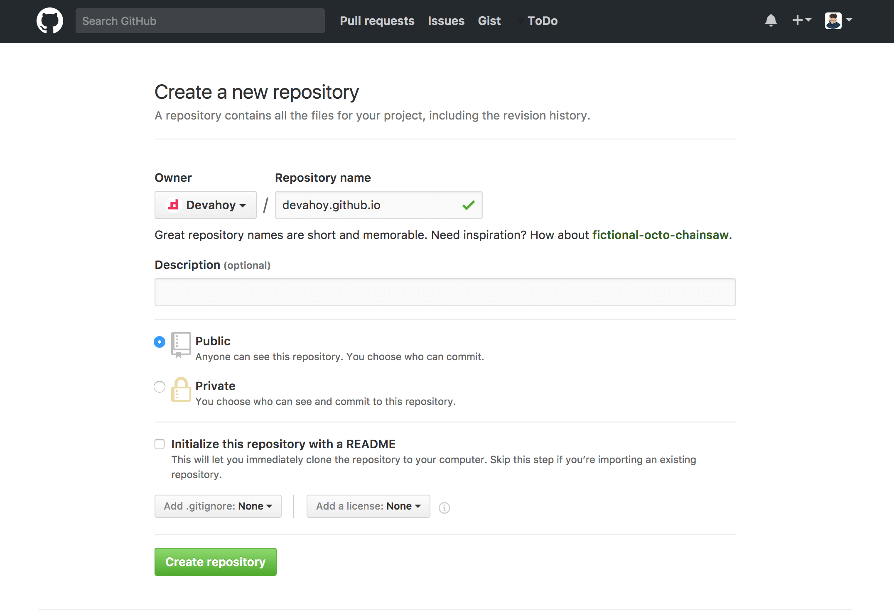
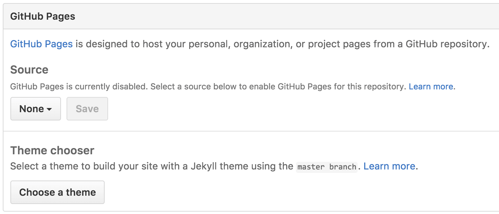
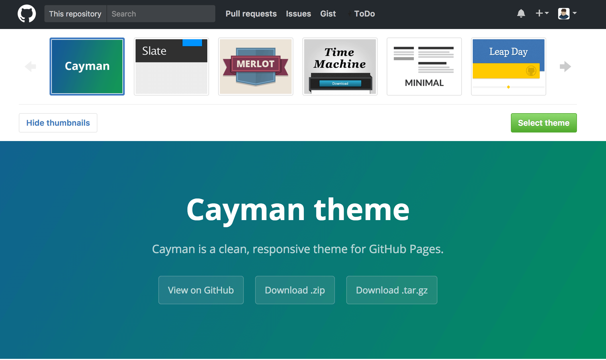
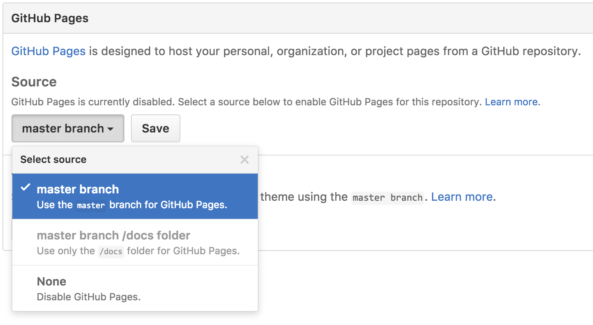

វិធី Deploy Website ដោយប្រើ Github Pages
Klinton C.
04 April 2019

ជាធម្មតានៅពេលដែលយើងបង្កើត Website ខ្លួនឯងហើយចង់អោយអ្នកដ៏ទៃបានឃើញ website របស់យើង យើងត្រូវ Deploy Website
ឡើងទៅ Hosting ជាមុនសិន ហើយការ Deploy នេះមានទាំងត្រូវបង់ប្រាក់ និងហ្រ្វី។ ប៉ុន្តែការប្រើរបស់ហ្វ្រីគឺមានចំនួនកំណត់ ដូចជា អោយ
space តូច រឺបានត្រឹមតែ subdomain។
ហើយក្នុងករណីដែលយើងចង់មាន website សម្រាប់ខ្លួនឯង ហើយខ្វះខាតដើមទុនតើត្រូវធ្វើដូចម្តេច? វិធីងាយស្រួលដែលចង់មកនែនាំនៅពេលនេះគឺ Github Pages។
ហើយក្នុងករណីដែលយើងចង់មាន website សម្រាប់ខ្លួនឯង ហើយខ្វះខាតដើមទុនតើត្រូវធ្វើដូចម្តេច? វិធីងាយស្រួលដែលចង់មកនែនាំនៅពេលនេះគឺ Github Pages។
Sample Website ដែលប្រើ Github Pages


Website ផ្សេងៗដែលប្រើ Github Pages អាចចូលមើលបន្ថែមបាន:
GitHub Pages examples
អ្វីដែលយើងគួរមាន
- អាចសរសេរ HTML/CSS/JavaScript
- មានចំណេះដឹងក្នុងការប្រើប្រាស់ Git/Github
របៀបប្រើប្រាស់ Github Pages
យើងអាច Deploy website ដោយប្រើ Github Pages ដោយវិធី២យ៉ាងគឺ ការបង្កើត Git Repository
បែប User និង Project។
1. បែប User
Create Git Repo ដោយសរសេរឈ្មោះដែលយើងពេញចិត្ត រឺក៏ឈ្មោះខ្លួនឯង <USERNAME>.github.io
ឧទាហរណ៍ User ដែលប្រើ Github ខាងក្រោមឈ្មោះ devahoy។ ដូច្នេះនៅពេលដែល create New Repository គាត់អាចសរសេរថា devahoy.github.io ជាដើម។

ឧទាហរណ៍ User ដែលប្រើ Github ខាងក្រោមឈ្មោះ devahoy។ ដូច្នេះនៅពេលដែល create New Repository គាត់អាចសរសេរថា devahoy.github.io ជាដើម។
បន្ទាប់មកធ្វើការ Clone repository ចូលទៅក្នុងកុំព្យូទ័រផ្ទាល់ខ្លួនរបស់យើង។
បន្ទាប់មកទៀតយើងធ្វើការ create file ឈ្មោះ index.html រឺក៏ បើសិនជាមាន website (static website) យើងអាច
copy and paste នៅក្នុង repo មួយនេះ ហើយធ្វើការ commit & push ក្នុង github តែម្តងក៏បាន។
File index.html
File index.html
<!DOCTYPE html>
<html>
<head>
<title>Hello Github Pages</title>
</head>
<body>
<h1>Hello Github Pages</h1>
</body>
</html>
Commit and push to github pages
git add index.html
git commit -m "add index page"
git push -u origin master
ពេល push រួចហើយយើងអាចចូល website ផ្ទាល់ខ្លួនរបស់យើងតាមរយៈ
https://username.github.io
ជាការស្រេច។
សម្រាប់អ្នកដែលមិនធ្លាប់ប្រើ Command Line អាចចូលមើល GUI Github for Windows/Mac តាមរយៈ link នេះ https://pages.github.com/
2. បែប Project
សម្រាប់បែប Project មិនបានកំណត់ច្បាស់លាស់ថាត្រូវប្រើឈ្មោះអោយដូច Username រឺអត់ទេ ប៉ុន្តែយើងនឹងប្រើវិធីកំណត់ branch តែម្តង។ ដោយការកំណត់ branch
អាចធ្វើដោយវិធី២យ៉ាង បង្កើត branch វាដោយខ្លួនឯង និង នៅត្រង់ Github មាន Setting សម្រាប់អោយយើង generate ។
វិធី Generate
បន្ទាប់ពី create New repository ចុចចូលទៅក្នុង project ដែលបានបង្កើត ហើយចុច Settings បន្ទាប់មកមើលទៅក្រោមយើងនឹងឃើញ Github Pages
ហើយចុច Choose a theme

ធ្វើការជ្រើសរើស Theme ដែលចង់បាន

បន្ទាប់មកយើងអាចបន្ថែម content ផ្សេងៗនៅក្នុង file
ចុងក្រោយយើងនឹងបាន domain website ផ្ទាល់ខ្លួនរបស់យើងដោយចូលតាម link https://username.github.io/PROJECT_NAME
README.md រួចហើយ Commit ។ ចុងក្រោយយើងនឹងបាន domain website ផ្ទាល់ខ្លួនរបស់យើងដោយចូលតាម link https://username.github.io/PROJECT_NAME
វិធីបង្កើត branch ដោយខ្លួនឯង
ការបង្កើត branch ខ្លួនឯងដោយមិនបានប្រើ Generate យើងត្រូវកណត់ branch ដែលយើងចង់បានទៅលើ Github Pages ដើម្បីអោយដឹងថា branch
មួយណាដែលយើងចង់អោយ render ជា website របស់យើង។
ដូច្នេះនៅក្នុង repository របស់យើង សាកល្បងដោយការបង្កើត file
ដូច្នេះនៅក្នុង repository របស់យើង សាកល្បងដោយការបង្កើត file
index.html ហើយ push ចូលទៅក្នុង branch project របស់យើង។
<!DOCTYPE html>
<html>
<head>
<title>Hello Github Pages</title>
</head>
<body>
<h1>Hello Github Pages</h1>
</body>
</html>
នៅក្នុង repository របស់យើងចុច Settings បន្ទាប់មកនៅត្រង់ Github Pages ជ្រើសរើស Source branch ដែលយើងចង់បាន ។

រួចហើយយើងនឹងបាន website ផ្ទាល់ខ្លួនរបស់យើងដោយមាន url
https://username.github.io/PROJECT_NAME